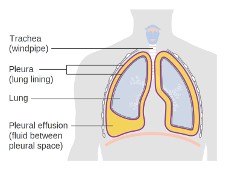
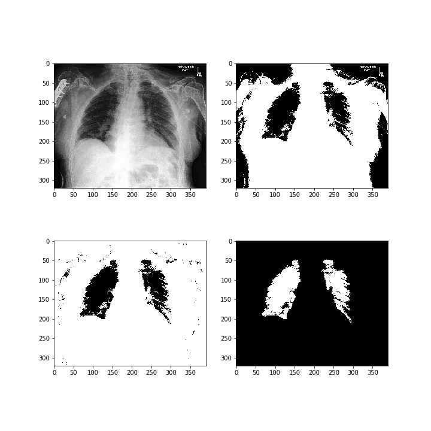

Overview
This page documents our semester project for Georgia Tech's masters level Machine Learning course in the fall of 2019. The goal of the project was to create a program capable of taking in X-ray images of a human chest and using those images to determine if the patient has a condition called Pleural Effusion. According to MedlinePlus.gov, Pleural Effusion occurs when there is an excess amount of fluid built up in the layers of tissue around the lung. This condition can be visually identified in X-rays because the excess fluid builds up underneath one lung, causing it to be compressed vertically. Our goal in this project was to create a program that can identify Pleural Effusion automatically using an X-ray image.
Image Credit to Cancer Research UK
Data
Our data came from a Stanford project called CheXpert. The CheXpert project provides a large dataset of labeled X-ray images. More information on the CheXpert project can be found here.
While the dataset contained images of a variety of different medical conditions, we elected to focus on only one condition: Pleural Effusion. We chose Pleural Effusion because there was a large number of positive cases of the condition in the dataset. Focusing on only one condition allowed us to experiment with multiple methods of classification. Below are example images for patients with and without Pleural Effusion.
No Finding:

Pleural Effusion:

Data Details
The original dataset from CheXpert contained 223,414 images, each classified as either "No Finding" or one of several medical conditions. Because our focus was on Pleural Effusion, removed all data cases that were not either positive Pleural Effusion or positive No Finding. This cut reduced the size of our dataset to 108,568 images. Because Pleural Effusion can be best identified from the front, and to prevent the differences in perspective, we also removed all instances of lateral images from the dataset, focusing only on images taken from the front. This reduced out dataset to its final size of 93,873 images. While the original dataset contained information about each patient's age and sex, we decided to focus exclusively on the image data and labels.
Strategy
Going into the project, we were not sure what learning algorithm would be best suited for our needs. Because of this, we decided to try several different classification algorithms and work from those results. We tried two unsupervised algorithms: K-Means and Gaussian Mixture Model (GMM). Neither algorithm produced very good results. We also tried two supervised learning algorithms and one semi-supervised learning algorithm. The first supervised learning algorithm was Convolutional Neural Networks (CNN). The second was K Nearest Neighbors. Our semi-supervised learning algorithm was a version of Label Propogation called Label Spreading. Each attempt will be documented in more detail below.
K-Means and Gaussian Mixture Model (GMM)
We used the sci-kit learn python packages for our implementation of K-Means and GMM. To attempt to capture more complex data, we created 20 different clusters for each algorithm, with the intent that some clusters would be composed of mostly positive Pleural Effusion data while the rest of the clusters were mostly No Finding. Even with 20 clusters and only the frontal images being considered, both K-Means and GMM struggled to produce any meaningful results. Our conclusion is that unsupervised clustering is simply not powerful enough to assist in this project without significant data preprocessing to bring out the important features.
Below are the images we reconstructed for the 20 clusters we created, as well as some plots showing the distribution of data throughout the clusters. As you can clearly see, these approaches produced nothing of interest.
K-Means:


GMM:


K Nearest Neighbors (KNN)
Preprocessing
We used a preprocessing algorithm that thresholds the greyscale x-ray to identify areas that might be lungs in frontal x-rays. We remove any remaining pixels by removing small to leave just the lungs. This process is shown in the image below.
Implementation
We used sklearn's neighbor library to implement the K-Nearest Neighbors algorithm. The features were extracted based on the number of pixels making up the left lung, the pixels in the right lung, and the total pixels in the image. The number of features and optimal number of neighbors was determined.

Results
The maximum accuracy of 68.8% was found with 125 neighbors and two features (ratio of left pixels to right pixels, and right pixels to total pixels).
Label Spreading
Label Spreading is a true semi-supervised learning algorithm. It is a form of Label Propogation that uses a loss function and regularization to increase its capacity to handle noise. We used the sci-kit learn implementation of label spreading. Label Spreading performed quite well against our testing function, producing the following evaluation scores:
- Accuracy: 0.86782
- Precision: 0.88208
- Recall: 0.96321
- Jaccard: 0.85333
- F1 Score: 0.92086